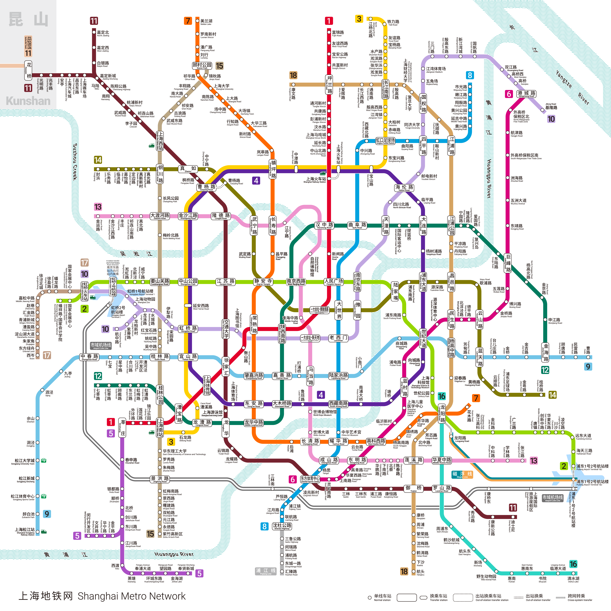

A Couple's Journey · 8 Days
Day by Day
● จุดเที่ยว ● ร้านอาหาร ● Moodang's pick ● Dao's pick
วันเดินทาง — เช็คอิน พักผ่อน แล้วออกไปชมเดอะบันด์ช่วงพระอาทิตย์ตก จบด้วยมื้อค่ำยูนนานสุดโรแมนติก
นั่งรถไฟความเร็วสูงไปหางโจว ~1 ชม. เมืองที่คนจีนว่าสวยที่สุด — ทะเลสาบซีหู วัดหลิงอิ่น และLongjing Tea Village ไปเช้ากลับค่ำพอดี
ขึ้นตึกสูง Stroll around Lujiazui พิพิธภัณฑ์ใหม่ฝั่งผู่ตง แล้วล่องเรือชมไฟสองฝั่งแม่น้ำ
วันคาเฟ่ฮอป เดินถนนต้นไม้สวย ๆ ที่โรแมนติกที่สุดของเซี้ยงไฮ้ ปิดท้ายมื้อค่ำฝรั่งเศสแสงเทียน
สวนโบราณ วัด ดิมซัม แล้วเข้าพิพิธภัณฑ์ระดับโลก ปิดท้ายช้อปปิ้งหนานจิงลู่ + หม่าล่าฮอตพอต
วันจันทร์พิพิธภัณฑ์ส่วนใหญ่ปิด แต่ Power Station of Art เปิด! ต่อด้วยย่านศิลปินและวัดกลางเมือง
Sleep in เที่ยวตามใจ ช้อปของฝาก ปิดท้ายด้วยโชว์กายกรรมระดับโลกที่อยู่ใกล้โรงแรมมาก
เก็บของ ฝากกระเป๋าไว้ที่โรงแรม เดินเล่นเก็บตกครั้งสุดท้าย แล้วมุ่งหน้าสนามบิน
Trip Map
เลือกวัน แล้วดูหมุดแต่ละจุดบนแผนที่ · กดที่รายการเพื่อโฟกัสหมุด · กด Open route เพื่อเปิดเส้นทางทั้งวันใน Google Maps
Eat & Drink
ร้านทั้งหมดอยู่ในโปรแกรม 8 วัน · = Moodang's pick · ราคาต่อคนโดยประมาณ
Metro
แผนที่รถไฟใต้ดินเซี่ยงไฮ้ 20 สาย 508 สถานี — อัปเดตล่าสุด ธ.ค. 2025

กดที่รูปเพื่อดูขนาดเต็ม · CC BY-SA 4.0 · โดย Alan Fan Pei
Museums
เช็ควันปิดให้ดี — โปรแกรมจัดวันไว้ให้ลงตัวกับวันเปิดแล้ว
Temples
วัดที่แวะในทริป — Jing'an (Day 6) & City God (Day 5) · จุดมูขอพรตาม TikTok
Budget
ประมาณการคร่าว ๆ สำหรับทริป 8 วัน · คิดที่เรตประมาณ 1 หยวน ≈ 4.8 บาท (มิ.ย. 2026 — เช็กเรตจริงก่อนเดินทางอีกที)
| หมวด | ประมาณการ |
|---|---|
| ค่าเข้าสถานที่Shanghai Tower ¥180, Yu Garden ¥40, City God ¥10, Jing'an ¥50, Natural History Museum ¥30, หางโจว (Lingyin+Leifeng) ~¥85 · พิพิธภัณฑ์อื่น + 1000 Trees + POP MART เข้าฟรี | ¥395–510 (≈฿1,900–2,450) |
| อาหาร & เครื่องดื่ม~¥300–400 (≈฿1,450–1,900)/วัน — มื้อหลัก + คาเฟ่ + ของหวาน/สตรีทฟู้ด (ทริปเน้นกิน) | ¥2,000–3,000 (≈฿9,600–14,400) |
| เดินทางMetro ~¥5–10/วัน + Airport Bus/DiDi + รถไฟหางโจวไป-กลับ ชั้นธุรกิจ ~¥440–560 (≈฿2,100–2,700) | ¥550–800 (≈฿2,650–3,850) |
| ล่องเรือหวงผู่ล่องเรือชมไฟสองฝั่งกลางคืน ~1 ชม. | ¥120–150 (≈฿580–720) |
| ช้อปปิ้ง / ของฝากPOP MART, เสื้อผ้า Qipu, ของฝาก — แล้วแต่คน | ¥300–800+ (≈฿1,450–3,850) |
| รวม | ¥3,350–5,200 (≈฿16,100–25,000) |